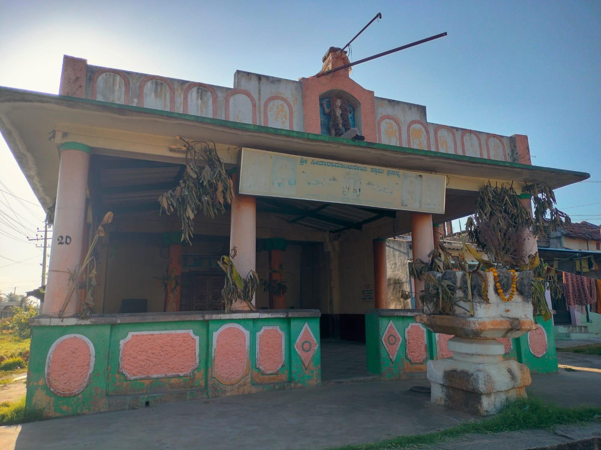

~ 9 feet
Dodda Anjaneya
The Great Anjaneya — towering, north-facing, His right hand raised in abhaya mudra. A small bell hangs at the tip of his tail, a quiet sign of the sages who once worshipped here.
A very ancient kshetra, reborn in stone and consecrated at the Maha Kumbhabhishekam of July 3 – 5, 2026.

Sri Vyasaraja set down not one but two idols here — both facing north, both raised in the gesture of fearlessness; each with a small bell at the tail.
The Great Anjaneya — towering, north-facing, His right hand raised in abhaya mudra. A small bell hangs at the tip of his tail, a quiet sign of the sages who once worshipped here.
The Child Anjaneya — pointing to the rashi chakra, warding off the afflictions of the Sun and the nine planets. At his feet lies the sleeping Kālapurusha himself.

Before the renovation, the Swamy stood plain — vermillion face, simple flower garlands, a small brass bell. After, He wears the gold kirita-crown and the Tirumala-style namam. The garbhagudi has been rebuilt around Him; the deity Himself has not moved.
Of the many forms of Lord Hanuman — Vīra, Bhakta, Dāsa, Yoga, Panchamukha — the Narthaki form is exceedingly rare. The hands do not grip a mace; they hold the rhythm of the universe.
Local lore says Hanuman, returning from Lanka with the sanjeevani, paused on the banks of the Cauvery near Rampura and danced in relief and joy. The village took that moment and made it a god.
At the deity's feet lies the Kālapurusha — the Lord of Time — sleeping. Devotees believe this is why the Swamy here wards off all manner of disease and untimely death, especially for children.

The reborn temple draws from the curvilinear towers of Kalinga, the star-counting pillars of the Hoysalas, and the layered scripts of the deep south — and in its mandapams it sets the whole sky in stone.
The shikhara has been raised in the curvilinear Kalinga style — its slender vertical rekhas rising in one unbroken sweep, crowned by amalaka and kalasha. The village has reached eastward, to Odisha, for its skyline.
The mandapam rises on twenty-seven lathe-turned Hoysala-style pillars — one consecrated to each nakshatra of the lunar zodiac. At the pillar of one's birth-star, the priests perform Nakshatra Dosha Parihara.
A second mandapam carries the twelve rasis of the zodiac. Before one's own sign, the priests perform Rasi Dosha Parihara — for the afflictions of the grahas and an unfavourable moon.
The new sanctum for Sri Vidya Hayagreeva has been clothed in language itself. Walls and lintels carry alphabets from the great literary tongues of India — the very letters a child first traces at Aksharabhyasam:

Sri Vidya Hayagreeva — the horse-faced form of Vishnu — presides over learning, mantra, and clarity of mind. Carved from black Krishna shila by Adithya yogiraj, the very sculptor who shaped the Bala Rama vigraha now installed at Ayodhya.
The shrine's story →